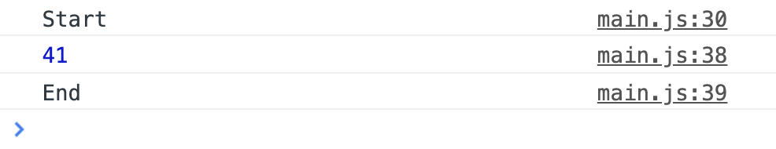
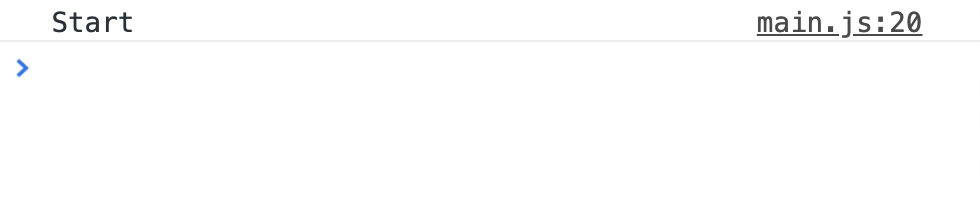

With this, we can begin looking at await in loops.
Await in a for loop
Let’s say we have an array of fruits we want to get from the fruit basket.
const fruitsToGet = ['apple', 'grape', 'pear']
We are going to loop through this array.
const forLoop = async _ => {
console.log('Start')
for (let index = 0; index < fruitsToGet.length; index++) {
// Get num of each fruit
}
console.log('End')
}
In the for-loop, we will use getNumFruit to get the number of each fruit. We’ll also log the number into the console.
Since getNumFruit returns a promise, we can await the resolved value before logging it.
const forLoop = async _ => {
console.log('Start')
for (let index = 0; index < fruitsToGet.length; index++) {
const fruit = fruitsToGet[index]
const numFruit = await getNumFruit(fruit)
console.log(numFruit)
}
console.log('End')
}
When you use await, you expect JavaScript to pause execution until the awaited promise gets resolved. This means awaits in a for-loop should get executed in series.
The result is what you’d expect.
'Start'
'Apple: 27'
'Grape: 0'
'Pear: 14'
'End'
This behaviour works with most loops (like while and for-of loops)…
But it won’t work with loops that require a callback. Examples of such loops that require a fallback include forEach, map, filter, and reduce. We’ll look at how await affects forEach, map, and filter in the next few sections.
Await in a forEach loop
We’ll do the same thing as we did in the for-loop example. First, let’s loop through the array of fruits.
const forEachLoop = _ => {
console.log('Start')
fruitsToGet.forEach(fruit => {
// Send a promise for each fruit
})
console.log('End')
}
Next, we’ll try to get the number of fruits with getNumFruit. (Notice the async keyword in the callback function. We need this async keyword because await is in the callback function).
Since map always return promises (if you use await), you have to wait for the array of promises to get resolved. You can do this with await Promise.all(arrayOfPromises).
When you use await in a filter callback, the callback always returns a promise. Since promises are always truthy, everything item in the array passes the filter. Writing await in a filter is like writing this code:
For this case, let’s say you want to find out the total number of fruits in the fruitBasket. Normally, you can use reduce to loop through an array and sum the number up.
// Reduce if there's no await
const reduceLoop = _ => {
console.log('Start')
const sum = fruitsToGet.reduce((sum, fruit) => {
const numFruit = fruitBasket[fruit]
return sum + numFruit
}, 0)
console.log(sum)
console.log('End')
}
You’ll get a total of 41 fruits. (27 + 0 + 14 = 41).
'Start'
'41'
'End'

When you use await with reduce, the results get extremely messy.
// Reduce if we await getNumFruit
const reduceLoop = async _ => {
console.log('Start')
const sum = await fruitsToGet.reduce(async (sum, fruit) => {
const numFruit = await getNumFruit(fruit)
return sum + numFruit
}, 0)
console.log(sum)
console.log('End')
}
'Start'
'[object Promise]14'
'End'

What?! [object Promise]14?!
Dissecting this is interesting.
In the first iteration, sum is 0. numFruit is 27 (the resolved value from getNumFruit('apple')). 0 + 27 is 27.
In the second iteration, sum is a promise. (Why? Because asynchronous functions always return promises!) numFruit is 0. A promise cannot be added to an object normally, so the JavaScript converts it to [object Promise] string. [object Promise] + 0 is [object Promise]0
In the third iteration, sum is also a promise. numFruit is 14. [object Promise] + 14 is [object Promise]14.
Mystery solved!
This means, you can use await in a reduce callback, but you have to remember to await the accumulator first!
But… as you can see from the gif, it takes pretty long to await everything. This happens because reduceLoop needs to wait for the promisedSum to be completed for each iteration.
There’s a way to speed up the reduce loop. If you await getNumFruits() first before await promisedSum, the reduceLoop takes only one second to complete:
const reduceLoop = async _ => {
console.log('Start')
const sum = await fruitsToGet.reduce(async (promisedSum, fruit) => {
// Heavy-lifting comes first.
// This triggers all three `getNumFruit` promises before waiting for the next interation of the loop.
const numFruit = await getNumFruit(fruit)
const sum = await promisedSum
return sum + numFruit
}, 0)
console.log(sum)
console.log('End')
}
This works because reduce can fire all three getNumFruit promises before waiting for the next iteration of the loop. However, this method is slightly confusing since you have to be careful of the order you await things.
The simplest (and most efficient way) to use await in reduce is to: